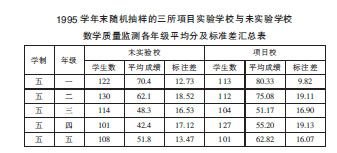
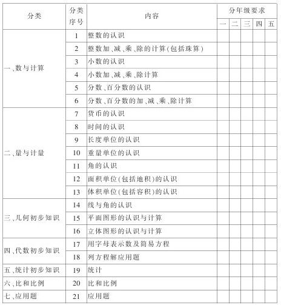
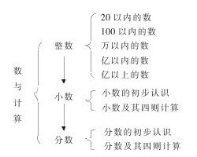
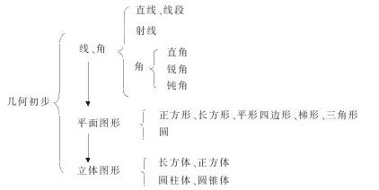
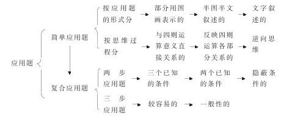

从系统论谈《小学数学学习标准》的实施 [1]
由国家教委、联合国儿童基金会为加强贫困地区小学教育而制定的《九年义务教育全日制小学数学学习标准》（以下简称《学习标准》）在我县各实验学校实验以来，受到了师生的普遍好评。大家一致认为：《学习标准》导向性明确，体现了九年义务教育阶段的小学数学教学的指导思想，利于教师在教学中落实培养目标；《学习标准》采用表格式进行编排，突出了教材的知识结构系统及各部分之间的内在联系，利于教师掌握教学内容；《学习标准》要求具体，凡能量化的尽量给出量化指标，具有可操作性、可检测性，利于教育行政部门、学校、教师对小学数学教学质量进行监测和评价，有利于学生对自己学习水平的自测。经过一年的实验，结果表明，实验班的教学质量均高于对比班。详见下表：

系统论的整体原理告诉我们：世界上的各种事物、事件、过程都不是杂乱无章的偶然堆积，而是一个合乎规律的、由各要素组成的有机整体。《学习标准》就是由小学数学教学的目标系统、教材的知识结构系统、质量监测系统及评价系统组成的一个整体。充分发挥各子系统的特定功能及它们之间相互联系产生的功能，是聚合整体效应的可靠保证。
一、目标系统
《学习标准》内含有小学数学的总体教学目标、中程教学目标和具体教学目标。
小学是实施九年义务教育的第一阶段，也是促进人全面发展的奠基工程。因此，《九年义务教育小学数学教学大纲》指出：“从小给学生打好数学的初步基础，发展思维能力，培养学习数学的兴趣，养成良好的学习习惯，对于贯彻德、智、体全面发展教育方针，培养有理想、有道德、有文化、有纪律的社会主义公民，提高全民族的素质，具有十分重要的意义。”这是结合数学学科特点对义务教育小学阶段培养目标的概括。这个总体教学目标对整个教学过程起着宏观指导和控制作用。
为了把总体教学目标逐步落实到位，根据小学生的年龄特征及接受能力，《学习标准》又分年级制定了年级学段教学目标，即中程教学目标。如：“发展思维能力”，以抽象与概括为例，低年级学段，主要属于直观形象的概括水平，因此让学生从各种不同实物、图形个数初步的抽象概括出数；中年级学段，主要属与形象抽象的概括水平，让学生从日常生活的问题中概括和掌握常见的数量关系，并学会运用；高年级学段，以本质抽象概括为主，让学生会用字母表示数、常见的数量关系、运算定律和公式，提高抽象概括能力。思想品德教育，根据各年级的不同教学内容，也进行了渗透，也有不同的要求。
具体教学目标，是把中程教学目标再分化而成的，一般是指一个教学单元或某个课题的目标。具体教学目标是教师根据教学内容而决定的。为了帮助教师准确把握教学目标，《学习标准》又分项作了说明。如小学数学第一册第二单元《10以内数的认识和加减法》的教学目标是：使学生认识10以内的数和掌握10以内的加减法。在这一目标之下，《学习标准》中列了以下各项：
1.会数10以内的不同物体个数；
2.能从各种不同实物、图形的个数初步地抽象概括出数；
3.会读、会写10以内的各数；
4.掌握10以内数的组成，知道几个一是几，几里面有几个一；
5.会排列10以内数的顺序；
6.能区分几个和第几个；
7.认识“＞”、“＜”、“=”，并会用符号＞、＜、=比较10以内数；
8.能开始从一个简单的判断推出另一个有关的新判断，如知道5比3大，就知道3比5小；
9.知道加法、减法的含义，认识加号“+”，减号“-”，等号“=”，理解这些符号表示的意义；
10.能说出加法和减法算式中各部分的名称，初步认识加法和减法的关系；
11.能看图列出加法算式和减法算式；
12.能根据一个加法算式推知并改写两个相应的减法算式；
13.能熟练地口算10以内的加减，达到每分钟8题，平均错误率在8%以内；
14.会进行10以内的数连加、连减的计算。
尽管《学习标准》对知识与技能的要求已一一列出来，但还有情感方面的，如培养学生对数学的兴趣，还有认真做数学练习和书写整洁的良好习惯的培养等，老师也应列入具体教学目标之中。使具体教学目标服从总体教学目标，总体教学目标要在具体教学目标中得到体现。
二、教材的知识结构系统
九年义务教育教材根据教学本身的逻辑体系和儿童的认识规律，将数、量、形、应用题等方面的内容联系起来，纵横交错，形成了一个完整的小学数学知识结构体系。《学习标准》以表格的形式对教材的知识与能力分类、分层，由易到难，由浅入深地进行排列，纵看是知识分类及层次，横看是各层次的分年级的要求（如下表所示）。

每部分知识又有各自的体系，如：



分年级要求，《学习标准》循序渐进呈递进系统进行编排。如应用题教学从第一层的要求来看：一年级—会根据加、减法的含义口头解答用图画表示的应用题（10以内数）；二年级—初步学会口述应用题的条件和问题，会书写答案；三年级—会用线段图表示应用题的已知条件和问题，并会分析数量关系，初步学会口述解题思路；四年级—能正确全面地分析数量关系，逐步学会对应、比较、等量、假设等数学思考方法；五年级—会有条理、有根据的说明解题思路。几何初步认识教学，先直观认识，再逐步抽象概括，这样的编排符合儿童的认识规律。
教师在教学中，只要掌握了教材的知识结构体系，明确了所教内容在这个知识体系中的地位和作用、联系和区别，善于引导、点拨，学生就能树立起学习的信心，乐意学习数学。
三、质量监测系统
为了有效地控制质量监测，达到预期的监测目的，《学习标准》指出了监测操作的基本要求及监测手段。
1.基本要求
（1）基础知识方面分知道、理解、掌握、应用四个层次；基本技能方面分会、比较熟练、熟练三个层次。
（2）对计算与应用题的错误率进行了量化控制，对计算速度也有时限。
（3）对初步逻辑思维能力的培养，初步空间观念的培养，用着重号标明。
（4）解决简单实际问题的能力，着重体现在运用所学知识和方法解答应用题，初步进行简单的统计、测量、制表、操作和画图等方面。
2.监测方式
（1）自测。这是学生对自己学习水平掌握的测试。自测不受时间和地点的限制，在家里、课外都可以进行，也可以在家长的协助下进行。比如让家长控制计算时间、看计算题的数量及正确率，然后对照《学习标准》看达到的水平，这样也便于家长掌握子女的学习情况（这比在作业本上签字效果要好得多）。学生的自测应要求有记录，记清每次测试的时间及结果，以便进行比较，看“今我”是否胜过“昨我”，鼓励学生自强不息，奋发向上。
（2）互测。同学之间进行的测试，一般在课外学习小组内进行，也可在课堂上进行，比比谁领先，形成竞争机制。
（3）教师组织测。时间可灵活掌握，可安排在基本的训练中，也可安排在巩固练习中或课堂作业中。测试形式可根据不同教学内容确定。如学了《吨的认识》后，可以通过口试，让学生说一说“日常生活中计量哪些东西的重量用吨作单位？”来检测，也可以通过练习中的书面填空进行检测。学习了《直角的初步认识》后，可用三角板在方格纸上画直角，或用三角板判断几个角是不是直角，通过实际操作进行检测。有时也可以在课堂小结中，让学生即时回想当堂所学的内容及教学要点进行检测。检测范围可大，也可小，一般以抽测一个小组为宜。
检测试题主要来自教材。因为九年义务教育教材“注意精选教学内容，建立合理的教材结构，在分量和要求上具有一定弹性。”适应了不同层次学生的需要。一般检查新知识的掌握情况时，选择和“做一做”同类型的题目；检查所学内容的巩固及技能时，选择练习中的题目；综合性测查，选择《整理和复习》或《总复习》中的题目。单元或小节的自我测查，教师应指导和鼓励学生自己试出检测题（自己做出答案）。这样做，既是对所学教材内容的一种很好的复习，又可以激发学生学习的兴趣，也为学生提供自我表现和发挥创造力的机会。
质量监测一般以随堂监测为主，以便及时反馈和调节教学情况，当堂任务当堂完成。形成性测查和诊断性测查根据教学进度及需要进行。总结性测查一般由上级统一命题进行。
四、评价系统
控制论的反馈原理告诉我们，“任何一个指向成功的学习，都必然包含输入信息、输出信息、评价信息和反馈信息四个环节，共同构成了一个完整的学习过程。”如果缺少了反馈与评价，就是不完全的学习。尤其是小学生都有好胜、好强的心理特点，及时进行教学效果的反馈和评价，使他们知道自己“学得怎么样”，既能满足他们学习的心理需要，又能强化他们“学”的动力系统，往往会取得事半功倍之效。
根据总体教学目标，小学数学教学应从认知系统和动力系统两方面进行综合评价。认知系统（指知识、能力等）主要看学生学了多少，看是否“会学”。动力系统（指兴趣、情感、意志等）主要看学生是怎样学得，看是否是“我要学”。
具体的评价方法，北京师范大学周玉仁教授指出，可从“三个方面”下手。
1.总结性评价与形成性评价相结合，尤其要重视后者。
平时考查是在正常教育过程中自然进行的，这种考查对学生更有激励作用，也便于及时获得反馈信息，作出自我矫正。
2.他人评估与自我评估相结合，尤其要加强自我评估。
要培养学生对自己的学习结果和学习过程做出自我评价的能力。如果学生能够做到这点，那么学习的主动性、自觉性必然大大增强。
3.笔试、口试与实际操作测试适当结合。
根据数学课特点，除了常用笔试、口试方法外，有些内容，如几何初步知识等可采用实际操作方法考核，看一看每人测量、作图、制作等实际能力，以全面了解被试者的实际水平，进一步改进教学。
教学过程是一个极其复杂的控制系统，制定教学目标，设计和组织课堂教学，进行质量监测及教学评价，是构成教学过程的主要环节，他们之间相互制约，紧密相连。《学习标准》是《九年义务教育小学数学教学大纲》的具体化，体现了大纲所规定的基本要求，是小学数学教学的依据，也是教学质量监测和评价的依据。因此，实施《学习标准》已势在必行。
实施《学习标准》，教师是关键。教师要有改革意识，更新教学观念，深刻认识教学过程的本质，在教学过程中要把传授知识、指导学法、开发智力与培育学生的非智力因素紧密地结合起来。要真正确立学生在学习过程中的主体地位，增强学生的参与意识，促进学生个性的发展。要逐步改革单一的学校教育格局，形成一股由学校、社会、家长共同参与的综合教育势力。要冲破“封闭型”的教学模式，使教学成为开放系统，促进学生的全面发展。
系统论、信息论、控制论（简称“三论”）是相互关联的学科群。“三论”为小学数学教学改革提供了方法论的理论基础。用系统论谈《小学数学学习标准》的实施，仅仅是个初步尝试，只能起到“抛砖引玉”的作用，其最终目的还是在于通过实施《学习标准》来落实素质教育，为多出人才，出好人才而努力。